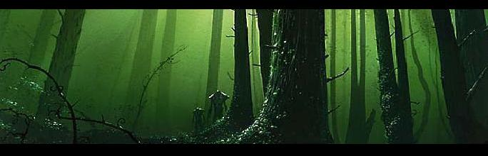
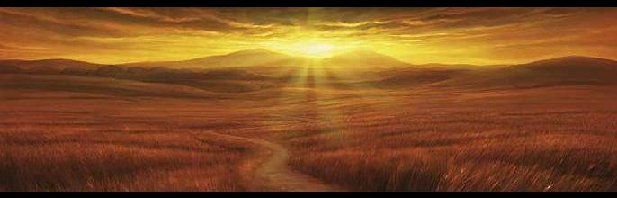
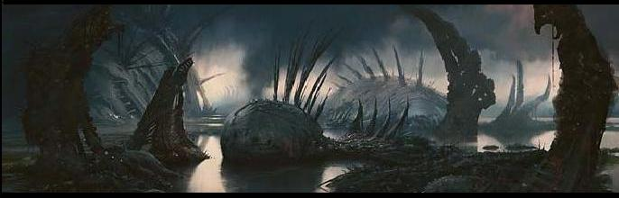
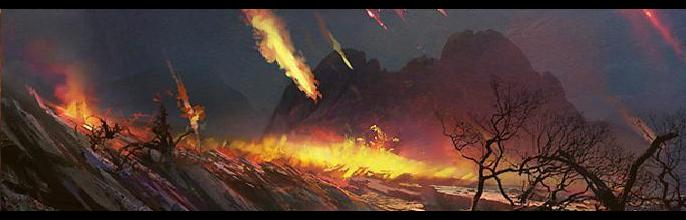
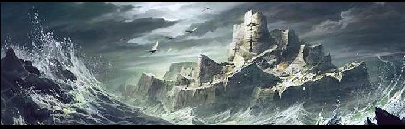
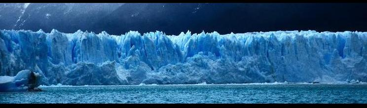

::: Garden of Gaia ::: Blessed Serra ::: Cursed Urborg ::: Scorching Shiv ::: Remote Tolaria ::: Icy Myr :::
This Mod alters DF in so many ways, that the normal world generation process is not reliable anymore. For the best results please use one of the many templates that this packet includes. Different Worlds have different themes and hopefully easy role playing.
All maps are 65x65 tiles, have 10 z-lvls minimum before the first cavern. Caverns are generally very open to help FPS and contain small lakes. Minerals, Flux and Gems are plenty on all maps. All evil region interactions are active, as well as a very high number of megabeasts and titans. You will also find many caves. I advise not to run these worldgens longer then 300 years to ensure that the high number of invaders does not diminish your allies.
The very first worldgen, called "Starters World" is the easiest setting any new player can hope for. Maxed out embark points, no nightcreatures or demons, no evil rains or interactions.
Garden of Gaia - 65x65
| The Garden of Gaia is a world with many mixed biomes. You can easily find normal, good and evil within one embark square. It is designed to give you the maximum in race- and creature-diversity. Due to the high factor of randomness please mind the sometimes erratic metal and soil distribution. The closer you get to the lake in the center, the less savage the country gets. |

Blesses Serra - 65x65

| Blessed Serra is an easy world. You will not find evil biomes here, only good ones. Plenty of rivers and volcanoes to help you on the way. It ranges from Mountains to Ocean, with most civs settled on the coast. The Area around the lake in the north-west is savage. |

Cursed Urborg - 65x65

| Cursed Urbog is difficult. You will only find evil biomes here, no good ones. Most civs have a hard time surviving this worldgen, so don't be surprised if you have 1 or 2 allies less then usual. The region is mountainous in the west and has a coastline in the east. Savagery is high. Due to the swamp and drainage level this map has less flux and metal then other worldgens. Have fun. |

Scorching Shiv - 65x65

| Scorching Shiv is a desert world. You will find many mountains, hills and dunes, but only few areas with grass, water or trees. Most friendly civs will settle in the north, through the mountain pass. You will find many volcanoes in this map, to counterbalance the lack of trees. Due to the high volcanism conventional fuel is rare. The further south-west you go into the desert, the more savage the area gets. |

Remote Tolaria - 65x65

| Tolaria is designed to allow isolated plays on small islands. You might have one ally, or one invader race, but you can check the access to those before you embark. Otherwise you can find everything from Mountains to Forest to Ocean on this map. Most civs will settle on the big island. The further away you go from it, the higher the level of savaragy gets. |

Icy Myr - 65x65

| Icy Myr mostly consists of glaciers and mountains. A difficult embark indeed. You can find several Volcanoes to ease the melting of water. Most civs will settle in the green and warm south. It can still be that some civs wont survive the harsh climate, so don't be surprised if you have less allies or invaders then expected. |

::: Home :::
|